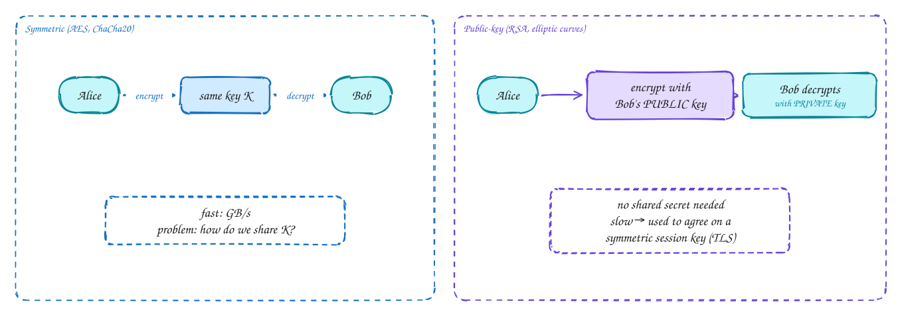
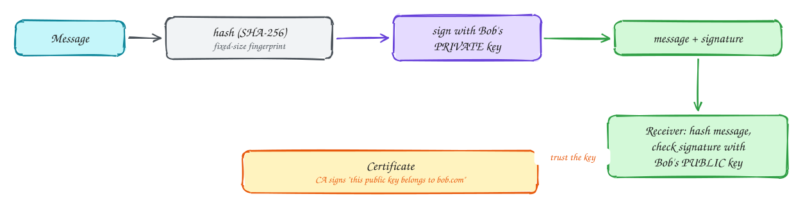
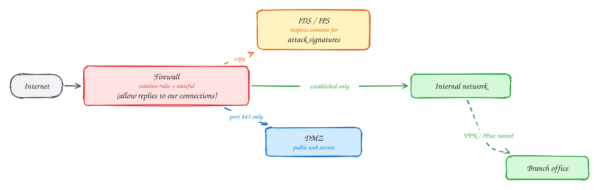

Chapter 8: Security in Computer Networks¶
Intermediate
These pages are study notes in our own words and diagrams on Computer Networking: A Top-Down Approach by James Kurose and Keith Ross, connected to system design. They don't replace the book, which is worth reading in full.
TL;DR¶
The Internet was built to connect trusting researchers, so security was added later, layer by layer. Secure communication needs confidentiality (only the intended receiver can read it), integrity (changes are detected), authentication (you know who you're talking to) and availability. Cryptography provides the first three. Symmetric keys are fast but must be shared; public-key cryptography solves sharing; hashes, MACs and signatures protect integrity; certificates bind keys to names. TLS combines all of this for the web. IPsec/VPNs, WPA, firewalls and intrusion detection protect other layers.
Key ideas: confidentiality, integrity, authentication · symmetric vs public-key · Diffie-Hellman key agreement · hashes · MACs · digital signatures · certificates and CAs · nonces and replay · TLS · IPsec and VPNs · WPA · firewalls · IDS
What "secure" means¶
Why it needs defining: "make it secure" is too vague to design for. The book's cast is Alice and Bob, who want to talk, and Trudy, an intruder on the network who can eavesdrop, modify or inject messages, replay old ones, impersonate either side, or flood them (denial of service).
The properties we want:
- Confidentiality: Trudy can't read the messages → encryption.
- Integrity: Trudy can't change them unnoticed → MACs and signatures.
- Authentication: each side knows who the other really is → certificates, signatures, challenge-response.
- Availability: the service keeps working under attack → firewalls, rate limiting, DDoS protection.
Symmetric and public-key cryptography¶
Why two kinds: encryption scrambles a message so that only someone with the right key can unscramble it. The question is how the two sides get the right keys.

How each works:
- Symmetric (AES, ChaCha20): the same secret key encrypts and decrypts. It's very fast (gigabytes a second, with hardware support), so it's used for the actual data. The problem: both sides must already share the key, and you can't just send it over the network that Trudy is watching.
- Public-key (RSA, elliptic-curve cryptography): each party has a key pair. The public key can be published to everyone; the private key never leaves its owner. What one key locks, only the other unlocks. Anyone can encrypt to Bob with his public key, and only Bob can decrypt. Bob can also sign with his private key, and anyone can verify with the public key. It's slow, around 1,000× slower than symmetric.
How they combine: use public-key methods only to agree on a fresh symmetric session key, then encrypt the data with that key. Modern protocols use Diffie-Hellman key agreement (ECDHE): each side sends a public value, and both compute the same secret without it ever crossing the network. Because the session keys are thrown away after use, recording traffic today and stealing a server's private key later still doesn't decrypt it (forward secrecy).
Integrity: hashes, MACs and signatures¶
Why encryption alone isn't enough: encryption hides content, but Trudy might still flip bits or replay a message. Bob needs to know the message is exactly what Alice sent.

How:
- A cryptographic hash (SHA-256) turns any message into a fixed-size fingerprint. It's practically impossible to find two messages with the same hash, or to work backwards from a hash.
- A MAC (message authentication code, usually HMAC) hashes the message together with a shared secret key. Only someone with the key can produce the right MAC, so a valid MAC proves the message came from a key holder and wasn't changed. Webhook signatures and API request signing work like this.
- A digital signature encrypts the message's hash with the sender's private key. Anyone can verify it with the public key, and only the private key holder could have made it. Unlike a MAC, it doesn't need a shared secret, and it proves to third parties who signed (non-repudiation).
- A certificate solves "is this really Bob's public key?" A certificate authority (CA) that everyone trusts signs a statement: "this public key belongs to bob.com". Browsers ship with a list of trusted CAs and check the chain of signatures.
Authentication and replay attacks¶
Why it's subtle: proving identity over a network is harder than it looks. If Alice proves who she is by sending a password, or even an encrypted password, Trudy can record that message and replay it later.
How it's done safely: challenge-response with a nonce. Bob sends a fresh random number (a nonce) used only once. Alice proves her identity by returning it encrypted or signed with her key. A recorded answer is useless next time, because the nonce will be different. The same idea protects against replays elsewhere: TLS mixes random values from both sides into its keys, and signed API requests include timestamps and nonces.
TLS: securing TCP connections¶
Why: TLS (successor to SSL) is how nearly everything on the Internet is protected: HTTPS, secure email, database connections, gRPC.
How it works, in outline (see How HTTPS works for the step-by-step diagram):
- Handshake: client and server agree on algorithms and exchange Diffie-Hellman values. The server sends its certificate and signs the handshake with its private key, proving it owns the certificate.
- The client verifies the certificate chain up to a trusted CA, checks the name matches the site, and checks the signature.
- Both derive the same session keys from the shared secret and random values from both sides.
- Data transfer: records are encrypted and integrity-protected with the symmetric keys (authenticated encryption such as AES-GCM). Each record has a sequence number, so reordering or replaying records is detected.
TLS 1.3 completes the handshake in one round trip (zero for a resumed session) and removes old, weak options.
Tip
Say this in the interview: "All traffic uses TLS 1.3: terminated at the load balancer for public traffic, and mutual TLS between internal services, so services authenticate each other with certificates issued by our internal CA."
IPsec, VPNs and Wi-Fi security¶
Why other layers need protection too: TLS protects one application connection. Sometimes you want to protect everything between two networks, or the wireless link itself.
How:
- IPsec secures traffic at the network layer. In tunnel mode, whole IP packets are encrypted and wrapped inside new IP packets between two gateways. Every application benefits without changes. Site-to-site VPNs (connecting an office to a cloud VPC) commonly use it. Newer VPNs such as WireGuard follow the same idea with a much simpler design.
- Wi-Fi security (WPA2, WPA3) authenticates devices to the access point and encrypts frames over the air, so neighbours can't read or inject traffic on the wireless link. In companies, authentication goes through a central server (802.1X with EAP), so each user has their own credentials.
- Cellular networks authenticate each SIM against the operator's subscriber database and encrypt the radio link.
Firewalls and intrusion detection¶
Why: even with encryption everywhere, organisations must control what traffic is allowed in and out, and spot attacks in progress.

How:
- Packet filters (stateless firewalls) allow or block each packet by rules on addresses, protocol and ports: "allow TCP port 443 to the web servers, block everything else inbound".
- Stateful firewalls track connections: "allow replies to connections we started, block unsolicited incoming connections". Cloud security groups work this way.
- Application gateways and web application firewalls inspect application data, for example blocking SQL injection patterns in HTTP requests.
- Intrusion detection and prevention systems (IDS/IPS) inspect traffic deeply, matching known attack signatures and unusual patterns, and alert on attacks or block them.
- A DMZ is a separate network segment for public-facing servers, so a compromised web server doesn't give direct access to the internal network.
The modern trend is zero trust: don't assume anything inside the firewall is safe. Authenticate and encrypt every connection (mutual TLS), and give each service only the access it needs.
In the system design interview¶
Important
Interviewer asks: "How do you secure service-to-service traffic?" → Mutual TLS with short-lived certificates from an internal CA (often via a service mesh), network policies allowing only the needed paths, and per-service authorisation.
Important
Interviewer asks: "How do you know a webhook really came from the payment provider?" → The provider signs the body with an HMAC using a shared secret. You recompute and compare in constant time, and reject old timestamps to stop replays.
Important
Interviewer asks: "How do you protect the system from DDoS?" → Absorb at the edge (CDN or anycast DDoS protection), rate limits per client at the gateway, firewall rules dropping unwanted traffic, autoscaling, and load shedding for the rest.
Self-check¶
Try to answer before you open each one.
Why does TLS use public-key cryptography only during the handshake?
Public-key operations are slow. They're used to authenticate the server and agree on a shared secret (Diffie-Hellman). Bulk data is then encrypted with fast symmetric keys derived from it.
What is the difference between a MAC and a digital signature?
A MAC uses a shared secret key, so anyone with the key could have produced it. A signature uses the signer's private key and is verified with the public key, so it proves to anyone exactly who signed, and needs no shared secret.
How does a nonce prevent replay attacks?
The verifier sends a fresh random value each time, and the prover must sign or encrypt that value. A recorded old response contains the old nonce, so it is rejected.
Related¶
- How HTTPS works · Storing passwords · JWT · OAuth 2.0
- Webhooks vs polling · Rate limiting and load shedding